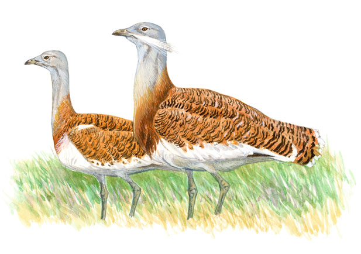

En Murcia la encontramos en el Altiplano, donde pasa el invierno reunidas en bandos discretos.
Las podemos encontrar en terrenos abiertos, con escasa vegetación, en campos de cereal, barbechos, eriales, es decir, en los ecosistemas esteparios.
La avutarda es la más voluminosa de las especies de la avifauna ibérica y una de las aves voladoras más pesadas que se conocen. Se trata de un habitante característico de las extensas llanuras cerealistas en las que todavía se practica una agricultura tradicional escasamente intensificada. Los grandes machos se reúnen en unas áreas muy concretas del territorio para desarrollar sus espectaculares paradas nupciales las “ruedas”, durante las cuales realizan un aparatoso cortejo para atraer a las hembras. España alberga la mitad de la población mundial.
